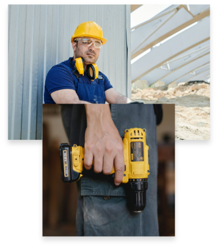
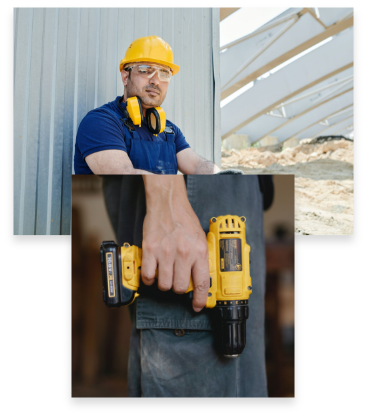

OM HÅNDVÆRKERSIDEN
Hvad er Håndværkersiden?
Håndværkersiden er et fællesskab bestående af ca. 17.000 håndværkere
der dagligt sparer med hinanden og rådgiver kunder.
I vores netværk er der ingen mellemmand, som gør det dyrere
for håndværkerne og kunderne at aftale priser.
På Håndværkersiden.dk formidler vi ganske
simpelt kontakt mellem håndværkere og kunder.
Det gør det nemt for kunden at finde
en ledig håndværker med de rette kompetencer,
og nemt for håndværkeren at finde arbejde.
 
